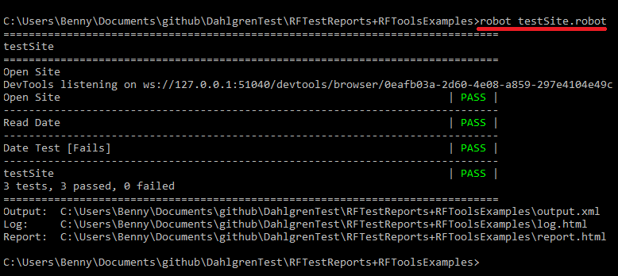
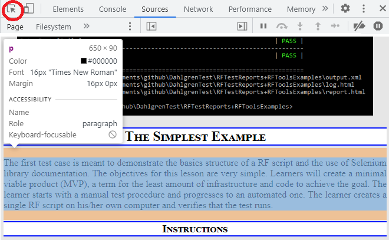
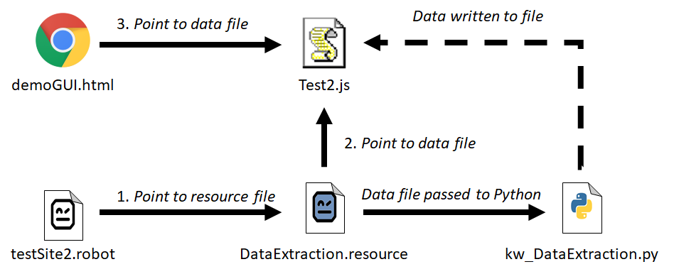
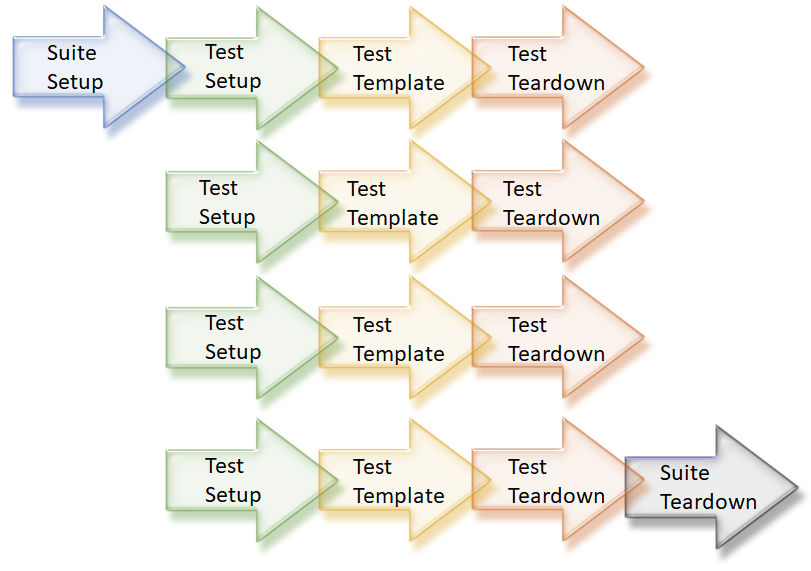

Robot Framework Training
Table of Contents
Overview
These training activities were built to allow developers and testers to become
familiar with Robot Framework through a series of progressively difficult, hands
on activities. All four examples tests agains
the DVIDS website which stores a variety of public release images from various
Department of Defence sources. That is a website accessible anywhere in the world
so that this training can take place at home, without access to government systems,
and without specialized equipment. The training can also be done in a group or alone
virtually or in a physical lab.
***WARNING***I highly recommend that you create your own solution
rather than directly copying the solution below. Your solution may vary quite a bit
depending on style and word choice. You will learn more from creating your own first and
then comparing with the provided solution. If you get truly lost, this example script gives
you a solid starting place for the next session.
System Configuration
This training was written for a Windows 10 machine and a Chrome browser. Consequently,
the configuration instructions are not universal and you are responsible for making
necessary changes if your system is different.
- If not installed previously, install Python 3.x on your machine. From the command line:
pip install robotframeworkpip install --upgrade robotframework-seleniumlibrary
- Visit this site
to download and install the chrome driver.
- You will need the Chrome version number. Click on the three dot menu in
the upper right corner of the browser. Select About > About Chrome Browser.
- Unzip the folder and add the location to path following
these instructions
- Download the first test script just to verify everything is working.
- From the command line type:
robot testSite.robot. You should observe Chrome opening the DVIDS site and
the output below.

The Simplest Example
The first test case is meant to demonstrate the basics structure of a RF script
and the use of Selenium library documentation. The objectives for this lesson
are very simple. Learners will create a minimal viable product (MVP), a term for
the least amount of infrastructure and code to achieve the goal. The learner
starts with a manual test procedure and progresses to an automated one. The learner
creates a single RF script on his/her own computer and verifies that the test runs.
Instructions
- Start by conducting the test manually to identify the steps you will take.
The purpose of RF is to enact the same actions that a human would take, so
you are going to explore the process first to ensure you know what you want
RF to do.
- Open a browser
- Navigate to https://www.dvidshub.net/
- Note the title on the window
- Note the appearance of the site
- Close the browser
- Open notepad and save a new file as testSite0.robot. Note that when you save
in notepad everything is .txt by default. In order to select your own extension
you will need to change the
Save as type from Text Documents
to All Documents. Add the following required elements to the robot
script.
*** Settings ***
*** Variables ***
*** Keywords ***
*** Test Cases ***
- To get access to the python code for browser access through the Selenium tool,
add this under
*** Settings ***. Note that there are three spaces
between the two words. RF allows you to use Tab or at least three spaces between
script elements. You can use either, but it is best to be consistent in your choice.
Library SeleniumLibrary
- Add three variables for the site in question. We could do this with any website
or browser, but for consistency the group should use these for our test. You can
give any name to the variables that you want. All variables have the form
${NAME}. Consider the following suggestions for variables:
- The name of the browser: Chrome
- The URL you navigated to: https://www.dvidshub.net/
- The title of the page: DVIDS - Defense Visual Information Distribution Service
- We will create test cases to automate the manual test you did in step one. Review
that list of actions and ask yourself:
- Which of these are test STEPS and which are OQE?
- Does the Selenium library have keywords for these activities?
Spend some time searching the Selenium library documentation
for useful keywords.
- Create test cases for each of the actions. You can combine some of them if you like.
The anatomy of a test case is:
Some Name for the Test Case
Some Keyword Any argument you need
A blank line comes between each test case
Four spaces precede each line
Always use for spaces before any additional arguments
- Run the test from the command line. You can verify the pass/fail of each
test step as it runs (you will see PASS or FAIL).
After the test is done, you can read the automatically generated log. Watch for the screen
capture in the log.
robot <<yourtestfile>>
Solution Scripts
Example of final script
Resources and Finding Elements
Start from the script you created in the previous activity. If you would prefer, you
can work from the solution script provided. The examples in these instructions will follow
from that script. This second activity is going to teach you two useful skills related to
RF and web-based testing. Even if you are not building and testing web-based systems, the
skills will be similar to what you will use in other software paradigms. Most importantly,
on the RF side you will learn how to refactor test steps and keywords so they can be moved
into resource files where they are reusable in many different tests.
Instructions
- Open the last test script and save again as a resource file. No specific naming convention
exists, but we prefer to name all robot files as .robot and a resource file as
resourceXXXXX.robot.
- In the resource file we will create keywords from the previously-defined test steps.
Basically, these look exactly like the test steps, but these can be called as keywords in
another test. You are free to rename the keyword to any word or even sentence that is
meaningful to you in a future test.
Open and Verify Site
Open Browser ${SITE URL} ${BROWSER}
Title Should Be ${TITLE}
Capture Page Screenshot EMBED
- Recreate the effect of test 0 using the resource file. You will need to add a line
to the settings that points to the new resource file. Then you can replace the
contents of the test step with a call to the newly create keywords. Make sure the
test still runs and passes all tests.
Resource ./resource1.robot
- Learn to use developer tools. Open the DVIDS site in a open browser, click the three
vertical dots or prest
CTRL+SHIFT+I. Across the top of the new window
there are tabs. Click on Elements. From elements, if you run your mouse
over code on the right you will see sections on the left highlighted in blue. Alternatively,
there is an inspector button which will show the name of code elements when you mouse
over sections of the actual web page.

-
You want to use these tools to find the
view background image button near
the bottom of the page. You can expand the code until you can see all of these details.
It is the red ...., representing the real UML link, that we want to find.
<div id="body_content"></div>
<div id="footer"></div>
<div class="uk-container uk-container-center"></div>
<div class="uk-grid"></div>
<div class="uk-width-medium-10-10"></div>
<a href="...." id="view_background_image_link"></a>
- The first task is to find the HTML tag that contains the link we want. You can use several
methods to find that button. Note that the id
footer is on the div
tag around that button. Under that are three more div tags and then an
a. So we can use a couple of different routes to find the footer and navigate
to the a.
- This one uses Cascading Style Sheet (css) syntax to find elements. There are many
sources with instructions
on CSS if you are unfamiliar with the syntax. Using CSS syntax makes a lot of
sense for web-based software. Here we are using the footer's id
and a series of tags below to find the right tag.
Find More Button
${id} = Get Element Attribute css:#footer div div div a id
Log Found ${id}
- This one uses Javascript code if you prefer. We start the same way by finding the
footer, then we use repeated firstElementChild to go down four layers.
Find More Button 2
${id} =
Execute Javascript return document.getElementById("footer").
firstElementChild.firstElementChild.firstElementChild.firstElementChild.id;
Log Found ${id}
- For more options see visit this site
- Use your new skills to:
- Find one of the top menu items and
Click Element on it.
- Find the search bar and use
Input Text to set the search text.
- After you type something into the search, find and specific text on the autocomplete.
- Find and click a link at the bottom of the page.
- What OQE do you have to verify that these actions happened? There are lots of options
like
Capture Page Screenshot or Capture Element Screenshot
and lots of "should" statements to verify contents like Title Should Be.
Solution Scripts
Resource file
Robot script
Refactoring and the OQE Library
Start from the script you created in the previous activity. If you would prefer, you
can work from the solution script provided. The examples in these instructions will follow
from that script. This activity will explain refactoring, a process for periodic review and
improvement of the reusability of your test scripts. It also makes use of the Objective Quality Evidience (OQE) library
which Dahlgren developed to directly connect from the RF test scripts to a fully formed
test report. By gaining familiarity with the OQE library, you can control the format of that
report.
Instructions
- You should regularly consider moving any useful keywords into the resource file. This is a
step that increases the reusability of the test. The basic strategy is to work on creating
some test capability and then consider how to turn it into a reusable "lego" block for
future tests. To do this, it is helpful to identify arguments (sometimes called parameters)
in the keyword. A keyword with no arguments is almost literally a one trick pony. With one
or more arguments it can be used for many different things.
Here is the original keyword in testSite2.robot. It searches for an element using this
specific CSS description. Similarly, the script is finding the value of the id
attribute. Those things, however, might vary over many different uses, so we can change
them to open arguments.
Find More Button
${id} = Get Element Attribute css:#footer div div div a id
Log Found ${id}
This is an updated and more open version of the keyword. It has two arguments
and we are using them to get the right attribute. We also return the extracted
value. This new keyword could be used for any purpose or it could be used for the original
purpose.
Find Tag and Get Attribute
[Arguments] ${CSS-IDENTIFIER} ${ATTRIBUTE-NAME}
${value} = Get Element Attribute ${CSS-IDENTIFIER} ${ATTRIBUTE-NAME}
[Return] ${value}
- After building the new keyword from your previous work, call that keyword and verify that
the test still works as before. You might call the new keyword like this. Once the test
runs and the results are the same I have REFACTORED the script. Refactoring is changing
the form, but not the function of the code. It starts and ends with tests that show the
changes have not altered the performance of the code. Use the refactoring steps #1 and #2
as often as necessary to move generic keywords into an appropriate resource file.
Test Keyword
${id} = Find Tag and Get Attribute css:#footer div div div a id
Log Found ${id}
- In this test we are going to introduce the reporting GUI and use some of those tools to
improve the test report beyond what Robot Framework offers natively. We will start by
editing a couple of files to set things up. These changes have already been made to your
libraries, but you should find and verify these settings for your computer. Open the
indicated files and update the file locations. If you are unfamiliar with relative file
paths this site
has good instructions.

- In the robot test script, add the resource file for data extraction.
Resource ./../OQE/DataExtraction.resource
- In the DataExtraction.resource file, give the paths for the two test files.
Originally, the library accepted two test files, but the current version just
uses the first. The second one is invalid. The file
paths are passed from the resource file into the python script.
Library kw_DataExtraction.py <test file> invalid WITH NAME oqe
- In the HTML GUI file the data source file needs to match. This is where the
GUI will look for data initially and periodically while the script is active.
<body onload="start('./../OQE/test2.js')">
-
We will run a few new test lines just to make sure everything is connected properly. The first
line sets up the test script for a new event and gives it the name "Test Suite 2". The next
four lines call built in keywords built for this kind of check. Test Check is in the resource
file and just logs that the resource file is connected. Prove it works is a keyword in the
python script and like the previous keyword, it just logs that the python file is connected.
Archive Any Previous Data finds the intended data file and stores the contents in an archive
folder. This keyword is typically called at the start of any test suite to safely store data
from a previous run. As part of this process it also sets up the blank data file in the
intended location. The last keyword, Insert Dummy Test Data, puts a few lines of data into
the file verifying that the connection is working.
Setup OQE
New Test Event Test Site 2
Test Check
${something} = Prove it works
Log ${something}
Archive Any Previous Data
Insert Dummy Test Data
After running this test, you can check for the log for the required text. Also open the HTML
GUI in a browser to verify the dummy data. If you see these effects, then you can be
confident everything is connected.

- Now edit the test file from the previous activity. Add the DataExtraction resource and
make
New Test Event the first step of the test. These changes are required
for each test with the OQE GUI. You may also want to use Archive Any Previous Data
so that each run exists alone in its own dataset. You can now use the OQE library instead
of the native RF capabilities. For the rest of this activity, go through your test and
replace the use of OQE. You can work from the library documentation above just as you
do with the Selenium library.
Solution Scripts
Resource file
Robot script
Data Driven Testing
Start from the script you created in the previous activity. If you would prefer, you
can work from the solution script provided. The examples in these instructions will follow
from that script. This time we will explore data driven testing where the same test can have
arguments so that it serves for several different test cases. Robot Framework can do this
natively or you can use one of several tools to import the data. In any case, the mechanisms
are similar. We will look at what RF can do on its own.
Instructions
- To set up a group of related tests, you need to go into settings and consider any
actions that need to be taken at five key periods. With several tests in a single
script, these period execute in a predictable series. Each test file can start with
Suite Setup and end with Suite Teardown. In between, each test of the set uses
the same Test Setup, Test Template, and Test Teardown. The only difference between
the tests comes from the data passed into the test as arguments. Thus we are using
Data Driven Testing.
Suite Setup - this is before any tests occur; best used for setting up
any default settings, doctrine, validation, etc.Test Setup - This runs before each individual test; best used to reset
or force a "new test" settingTest Template - this is the actual test.Test Teardown - this runs after each individual test; best used to
remove any "debris" from the test siteSuite Teardown - this is after all the tests have run; best used to
collect final OQE, shut down connections, etc.

- Following the terms above, you MUST add the Test Template keyword. All others are
optional. Each of these actions MUST be used a keyword. That doesn't mean you only
get five keywords. You can use any of the five keywords to call others, so you still
have unlimited flexibility.
*** Settings ***
Library Selenium
Suite Setup kw_Before All
Test Setup kw_Check Inventory
Test Teardown kw_Clear Status
Test Template kw_Run Test
-
Unlike the previous activities, a data driven testing script doesn't contain any script under Test Cases
Instead Test Cases is a table with a single row for each test in the group. Each test has a set of arguments
included on the same line. All test cases must have the same number of arguments. If an argument is
irrelevant for one test case, I suggest using
-- just to fill that space. You can also put
names above the arguments to help make the test more readable. It is suggested that you use tabs between
arguments for the same reason. Note that the string of text on the far left is the name for that test
case and can be accessed with the ${TEST NAME} variable. Start with one test case and you can build the
table over time.
| *** Test Cases *** | user | password | Worded | Name |
| Admin login | admin | admin | ${TRUE} | Mr. Admin |
| Lowly user | dummy | password123 | ${TRUE} | Dumbo Jr |
| No user | ${empty} | password456 | ${FALSE} | -- |
| No password | other | ${empty} | ${FALSE} | -- |
-
In DDT it is important to include the expected outcome as part of your test. These outcomes can be
used to validate your test on the fly as you are gathering the OQE. In this case, I used a true/false
variable just to indicate if the login was successful. I also included the name I expect to see in the
account section of the page. If I don't get in, I won't check the name (last two cases). I can validate
these results in my test. Your Test Cases table will include a mixture of directions and data checks.
-
The Test Template keyword is special because it receives all the same arguments laid out in the table.
On the first line allow space for each of the arguments. Note that you do not have to use the same NAME
for the arguments, but you do need to have the same NUMBER.
*** Keywords ***
kw_Login Test
[Arguments] ${user} ${password} ${worked} ${name}
- Go through and write your test as before. Use the input data to drive the test, validate it, and report out. There are some
pro tips to help you in this process. Here are some suggested steps.
- Take all the test steps you defined in activity 3 and move them into keywords for this script.
Now they will be keywords that can be called from the Test Template.
- Make the Test Template keyword call each of those keywords in order. Think of this as your test script with all the details
in the new keywords.
- Add OQE gathering for each keyword. Keywords are represented as blocks in the OQE GUI. There are also RF keywords which
capture any defect detected in the keyword. This is a good thing. You might check if X occurred or if Y was found as
expected, but if there was anything you missed that RF did find, it will show up in the keyword status.
- Go back to Test Setup and Test Teardown. Are there any actions you need taken before a test to ensure everything is ready
to roll? How about cleaning up after the fact? Add those if needed. Consider the worse case (that the previous step messed
everything up). What do you need to do.
- Suite setup and teardown are a bit more abstract as we don't have another suite of tests before or after. Consider what
would happen if someone had to follow your test. Is there something you should do to ensure the system is in a valid state?
Is there something you can close that will clear your state entirely? Sometimes signing in/out entirely is just the only
way to clear that kind of state.
Solution Scripts
Resource file
Robot script - This script shows the whole test as one keyword
Alternate robot script - This script shows separate keywords for all major test steps and the Test Template coordinating